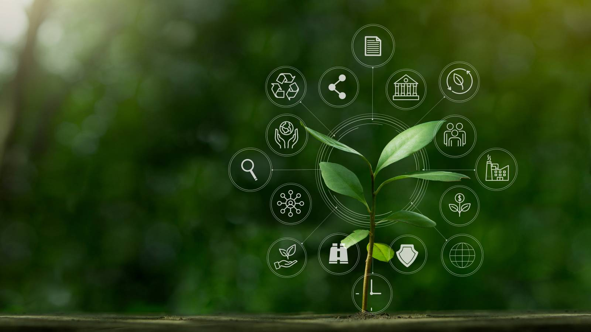
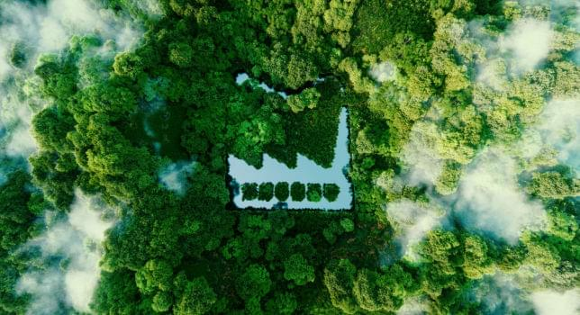

Panduan Profesional
ISO 14001
Standar internasional untuk Sistem Manajemen Lingkungan. Kelola dampak lingkungan, pastikan kepatuhan regulasi, dan dorong keberlanjutan organisasi Anda.

Status
Eco-Certified
Sustainable Future
Pengertian & Tujuan
ISO 14001 adalah standar internasional yang menetapkan persyaratan untuk Sistem Manajemen Lingkungan (EMS). Dirancang untuk membantu organisasi mengelola dampak lingkungan dari seluruh kegiatan operasional secara sistematis.
Tujuan utamanya adalah mengidentifikasi, mengendalikan, dan mengurangi dampak lingkungan, meningkatkan efisiensi sumber daya, serta membangun budaya keberlanjutan yang konsisten.
Manfaat Implementasi Strategis
Meningkatkan kinerja organisasi sekaligus menjaga keberlanjutan lingkungan.
Kepatuhan Regulasi
Memastikan semua kegiatan operasional mematuhi hukum dan regulasi yang berlaku, meminimalkan risiko sanksi dan denda.
Pengelolaan Dampak
Identifikasi dan kendalikan potensi dampak lingkungan seperti limbah, emisi, dan penggunaan sumber daya sejak dini.
Efisiensi Operasional
Penggunaan energi, air, dan bahan baku yang optimal mengurangi pemborosan dan biaya operasional secara signifikan.
Reputasi Publik
Meningkatkan kredibilitas dan kepercayaan dari pelanggan, investor, dan masyarakat terhadap komitmen keberlanjutan Anda.
Prinsip Dasar
ISO 14001
Penerapan standar ini dibangun di atas fondasi yang kuat untuk memastikan keberhasilan jangka panjang.
Kepatuhan Hukum
Mematuhi seluruh regulasi lingkungan yang relevan.
Pendekatan Berbasis Risiko
Identifikasi risiko lingkungan dan peluang perbaikan.
Perencanaan Terukur
Menetapkan tujuan lingkungan yang spesifik dan selaras kebijakan.
Peningkatan Berkelanjutan
Evaluasi kinerja sistematis untuk meningkatkan efektivitas EMS.
Tahapan Implementasi
Roadmap menuju sistem manajemen lingkungan yang efektif.
Penilaian Lingkungan
Mengidentifikasi dan mengevaluasi aspek dan dampak lingkungan yang signifikan dari seluruh proses, produk, atau layanan organisasi.
Pengembangan Sistem
Menetapkan kebijakan lingkungan, prosedur, dan tanggung jawab untuk mengelola dampak lingkungan secara efektif.
Implementasi & Pemantauan
Menerapkan prosedur EMS, memantau kinerja, dan melakukan audit internal untuk memastikan efektivitas kontrol.
Tinjauan & Perbaikan
Mengevaluasi hasil audit dan mengimplementasikan tindakan korektif untuk meningkatkan kinerja secara berkelanjutan.

Sertifikasi ISO 14001
Bukti bahwa organisasi Anda telah menerapkan EMS sesuai standar internasional. Melalui Audit Tahap 1 (Dokumentasi) dan Audit Tahap 2 (Implementasi Lapangan).